轨迹规划
以台湾大学林沛群教授的机器人学课程为例，链接内容：https://www.bilibili.com/video/BV1v4411H7ez
第五章和第六章讲了轨迹规划，轨迹规划就是规划机械臂的轨迹，让机械臂按照规划的轨迹运动。
引言
首先是介绍，5-1 小节讲的还是有点复杂了，就看下面的图就行了。有起始点和中间点，我们要规划出机械臂的轨迹，让末端按照规划的轨迹运动，显然图中虚线比红线更要合理。
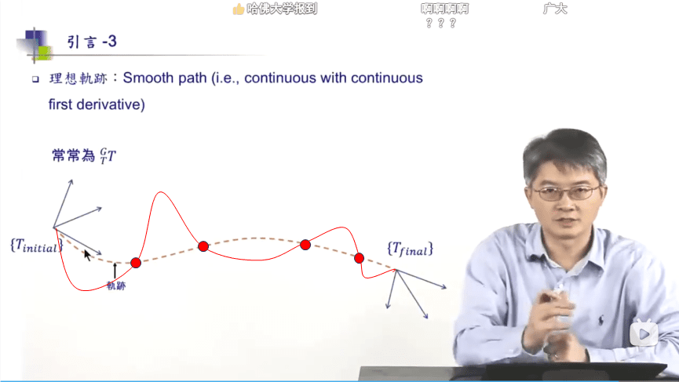
5-2 和 5-3 都不要看，其实就讲了一个核心：规划合理路径有两种思路：
- Joint-space：算出各个关节要运动的情况，让关节突变不要严重
- Cartesian-Space: 直接是末端端点的运动情况即可，这种可以最直观和最优路径
通常用的是 Cartesian-Space，比较简单直观。
然后就开始讲了轨迹规划的细节，因为涉及到了两章，所以可能会有点长。
Cubic Polynomials
第五章剩下部分，讲了其中一类方法：Cubic Polynomials。
思路描述
很简单，用三次方程去模拟。如下图所示，现在先当成一维去想，其中 \(\theta\) 表示位置，\(\theta'\) 表示速度：
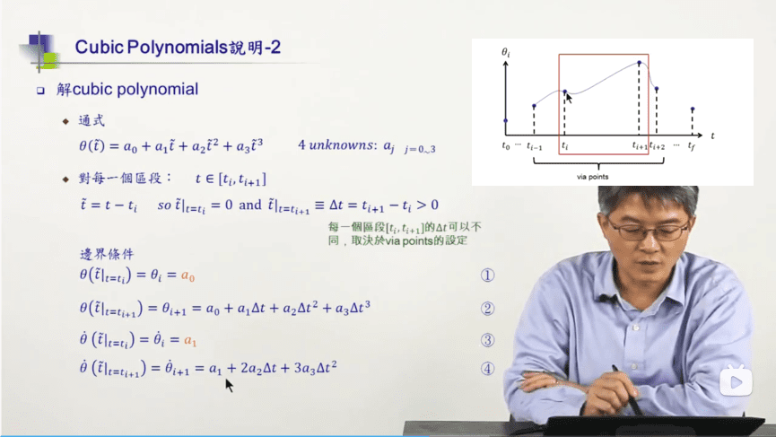
所以也是普通的解方程。上图中，最后方程三和四，速度我们是不知道的。所以我们要定义最下面两个方程，也就是定义前后端点的速度。有几种方法。
-
直接定义：没错，非常简单粗暴，或者就是简单用一下规则，如下图所示。
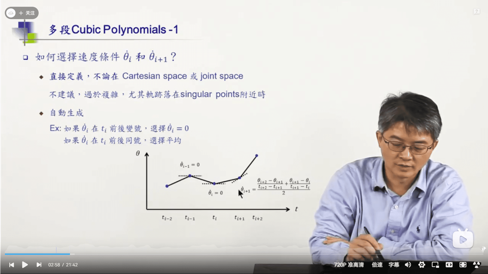
-
加速度是 Continous，也就是某个点他是第一段的末端，同时也是第二段的起始点，要保证这个时候加速度是一样的。这样要用三个点去联立，八个未知数一共八个方程，其中点 0 是起始点，点 1 是中间点，点 2 是末端点：
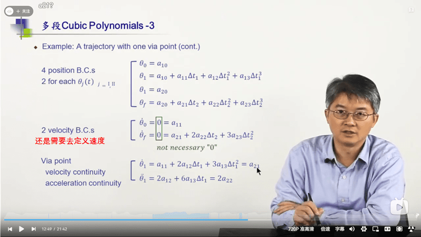
扩展到所有点（General Cubic Polynomials）
5-6 小节刚开始就是把上面的方法扩展到所有点。本质上都是一样的，同理，从上面中可以知道，需要我们去定义首末端点的行为去增加两个方程，这样才有唯一解。比如定义速度、加速度等等。
习题
5-6-02 和 5-6-03 讲了一个非常棒的例子，如下图所示：
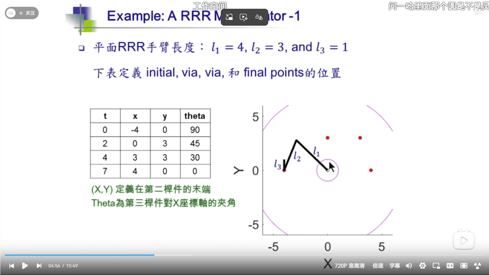
其中，5-6-02 讲了在 Cartesian Space 下的情况，本质就是上面讲的原理的直接套用，最终求出轨迹规划之后，再反推各个关节的运动情况。如下图，左边三个子图就是轨迹规划完成之后反推到各个关节的运动情况。
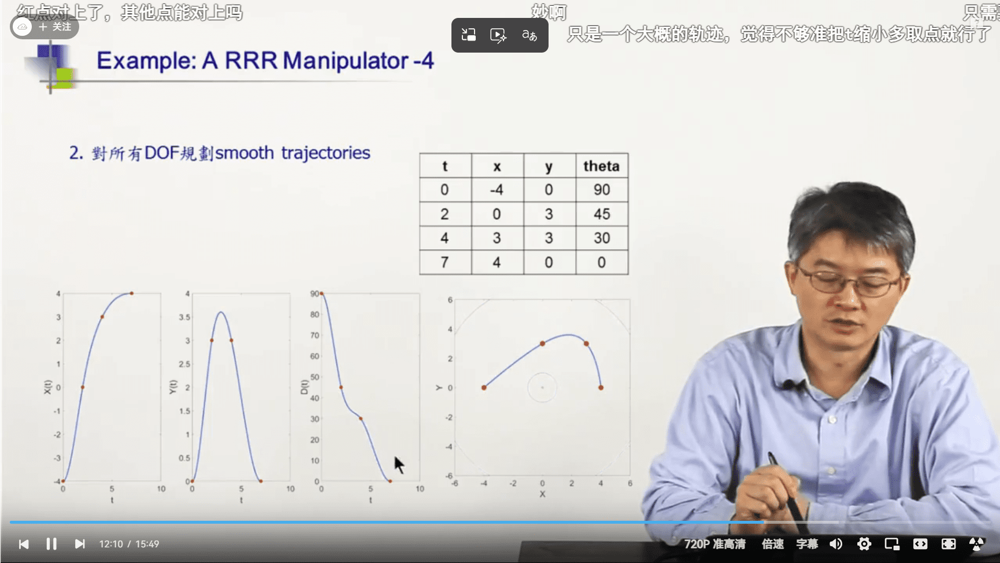
5-6-03 讲了在 Joint Space 下的情况，本质就是先求出几个中间点的时候，各个关节的角度，然后在每个关节上自己独立去做上面的 Cubic Polynomials。如下图，左边三个子图是各个关节独立去做规划的，做完之后合成到位置上，得到右图的轨迹。
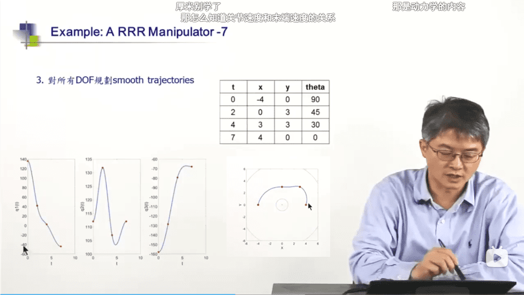
Linear Function
第六章讲轨迹规划另一个方法：Linear Function with Parabolic Blends。
思路描述
如下图所示，其实就是变成两点之间直线运动。这种规划确实蛮符合直觉的，我们肯定是希望直线更好。
但是由于关节从静止到运动，需要缓冲一下，实际情况是绿色的线。前面会有一段加速之间，中间保持匀速，最后再减速。
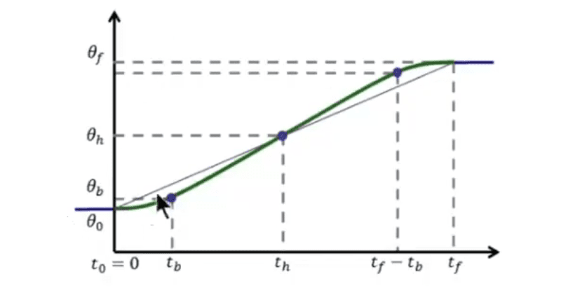
6-1 小节就聚焦一段的情况，就是假设起始点和终止点速度为 0，此时也是直接联立方程式就好了。这里的 \(t_b\) 是我们自己设计的，决定了加速度是多少。
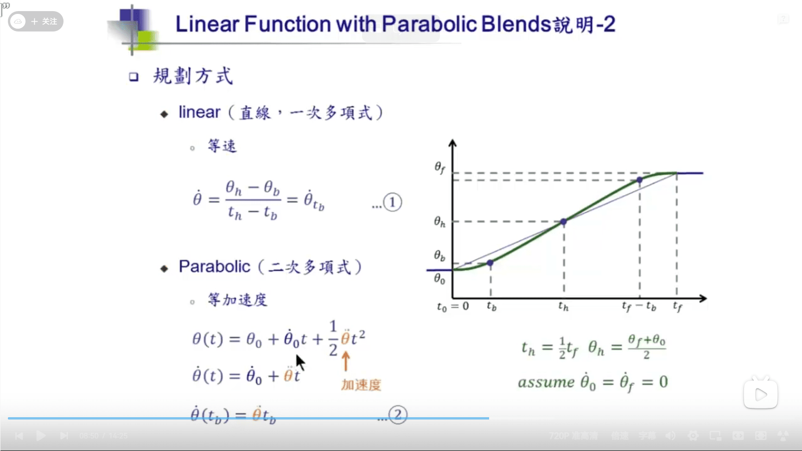
Genera Linear Function
还是一样，扩展到所有点，6-3 主要负责将这一部分。
其实没啥，我们只要设计好要求的加速度（或者设计加速用的时间，本质上一样），然后就正常求解方程。
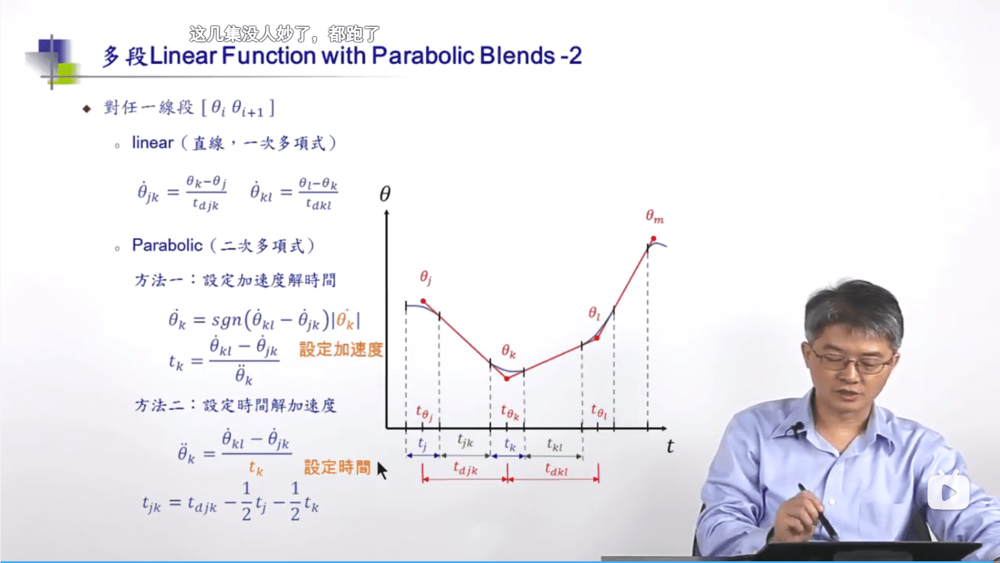
注意点 1, 6-3-01 小节说的，不要认为每个关节的加速度都一样，我们要根据关节各自不同的情况给每个关节设计不同的加速度。而且实际情况如下图，还有可能会不同姿态下给同一个关节设置不同的加速度，因为不同姿态下同一个关节受力也不一样。
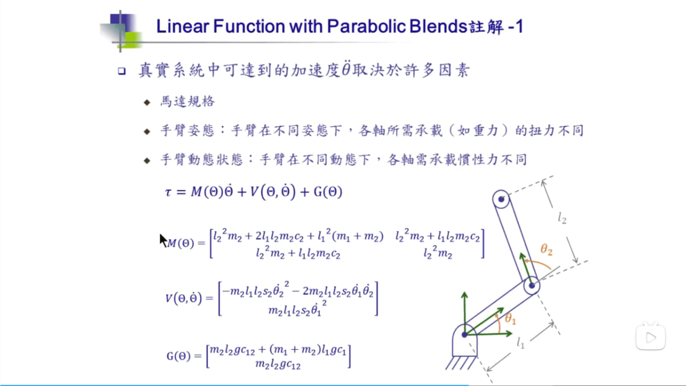
注意点 2，其实之前讲解的时候，规划的轨迹没有落在要求的点上面，而是在其附近。如果一定要强求这样，可以把 via point（也就是要求的点）转成其附近的两个点，如下图所示，红色点转成橘色点，总之是上 via point 落在轨迹规划中的直线部分，而不是加速减速的曲线部分。
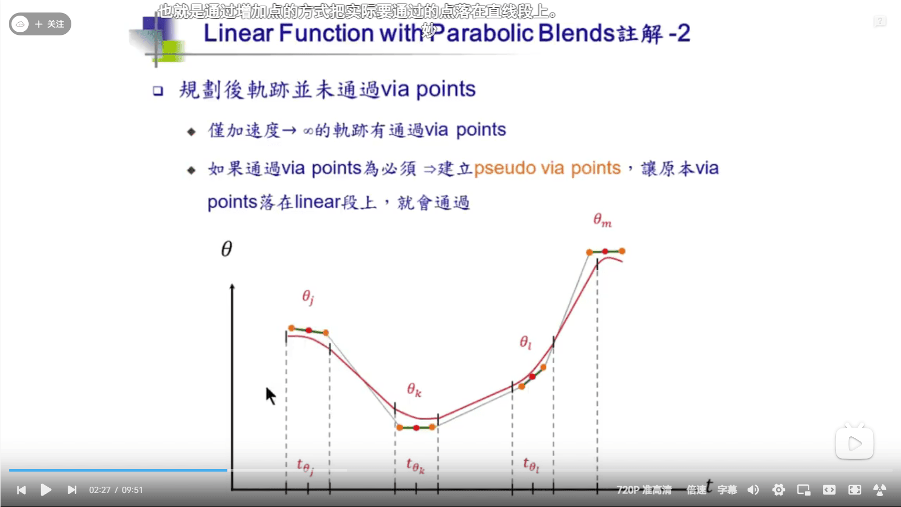
实际情况的限制
然后 6-4 讲了实际情况其实有的轨迹是没有办法行动的，一定要确认一下。举的三个例子很好：
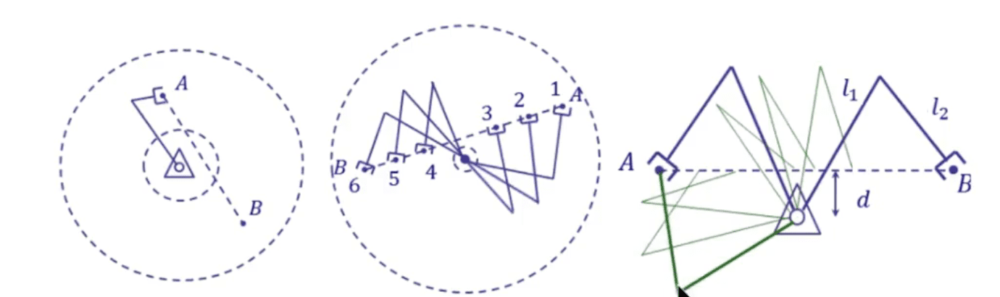
- 第一个，内圈表示机械臂末端无法到达。此时我们规划直线，其实这是一条不可能走成功的线。
- 第二个，从 1 到 6，虽然规划直线可以走通，但实际情况会看到这个线并不好，关节发生了很大的扭转。
- 第三个，从 B 到 A，虽然末端位置同样是 A，如果是机械臂是蓝色的线的姿态，无法走通；只有机械臂姿态是绿色线的姿态，这个时候，才能走通，机械臂此时按照绿色的几个示意去变化。
习题
6-5 就是讲了例子，和上一章一样的机械臂，这里直接给出动画：
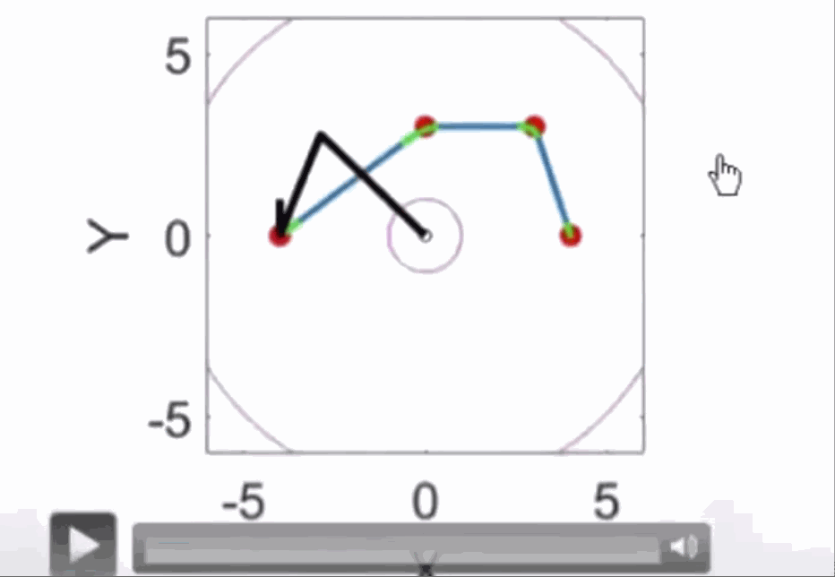
轨迹规划实例
第七章，就是专门讲了例子。依然是拿水杯的例子，简单但经典。
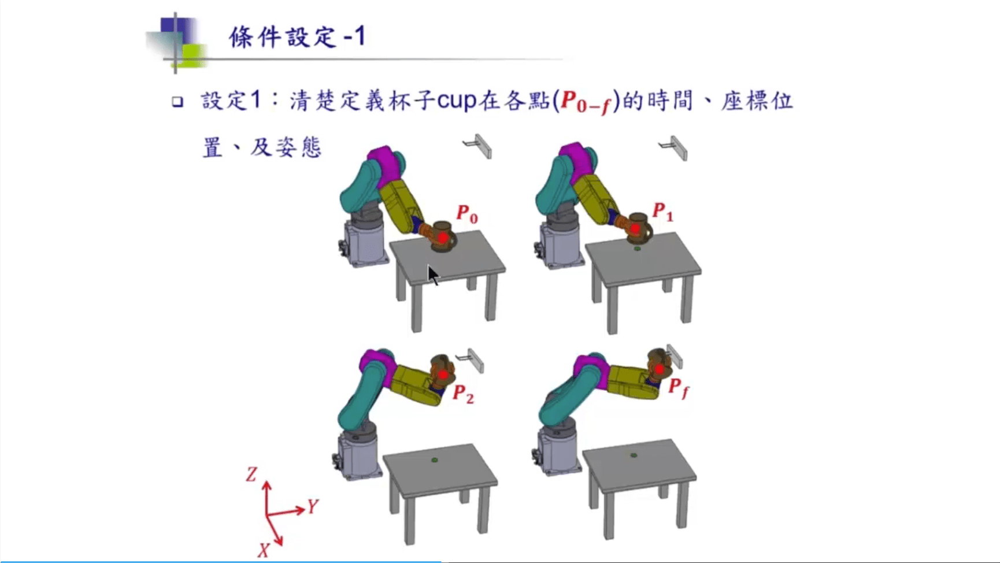
按照 Cartesian Space 的思路：
- 首先进行轨迹规划，从几个点去得到机械臂末端的运动轨迹。
- 得到各个轨迹中的点，使用逆向运动学，反推得到各个关节的角度。
-
关节按照计算的不同时刻的角度，进行运动。
按照 Joint Space 的思路：
-
首先使用逆向运动学，得到几个设计点的时候，各个关节的角度。
- 按照轨迹规划的方法，每个关节去做角度规划。
-
关节按照计算的不同时刻的角度，进行运动。
可以看到 Joint-Space 比较简单，计算量也小，只要做设计点的时候逆向运动学；而 Catesian-Space 是根据设计点去规划轨迹，得到更多的点，每个点都要做逆向运动学。
但是实际用的比较少。虽然容易控制关节，但末端轨迹可能很怪。比如抓水杯：
-
姿态要保持水平，杯子不能倒了
- 不要撞到桌子
- ...